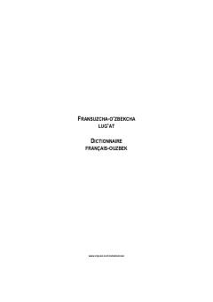

FLFransuz va oʻzbek tillari uchun moʻljallangan keng qamrovli oʻquv lugʻati.
Ushbu lugʻat Markaziy Osiyoni tadqiq qilish fransuz instituti (IFEAC) tomonidan tayyorlangan boʻlib, fransuz va oʻzbek tillari oʻrtasidagi madaniy va ilmiy aloqalarni rivojlantirishga xizmat qiladi. Lugʻat 28 mingga yaqin soʻz va iboralarni oʻz ichiga olgan boʻlib, unda kundalik soʻzlashuv tili, ilmiy-texnikaviy atamalar hamda jargonlar ham oʻrin olgan.